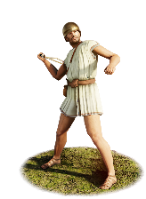

RTR: Imperium Surrectum
RTR: Imperium SurrectumEtruscan Slingers


Class: missile · Category: infantry · Men per unit: 40
Description
"When the others refused their offer and chose the death befitting men of noble birth, the Tyrrhenians renewed the struggle, attacking them in relays [...] standing in a body and hurling javelins and stones at them from a distance; and the multitude of missiles was like a snow-storm." – Dionysius of Halicarnassus (Roman Antiquities 9.21.3)
Levied from the lowest property class of the Etruscan city-states, these slingers serve as long-range skirmishers in the local garrisons and armies raised to protect Etruria or defend its allies. Lacking the financial means to purchase body armour or shields, these men go into battle wearing simple, short tunics. In central Italy, the sling has a dual identity: it is mainly an everyday tool used for hunting birds and small game, but in case of necessity, it can also be used for war. Armed with simple slings, alongside a small sidearm dagger for hand-to-hand combat, these men unleash volleys of river stones or lead bullets, one after the other, causing moderate damage to the enemy lines, especially against unarmoured units. While sufficiently capable to be of some use on the battlefield, their lack of military skill shows that these men are slingers out of economic necessity or duty rather than specialisation, and their complete lack of armour leaves them defenceless if caught in close-quarters melee.
Historical background
Etruria, usually referred to in Greek and Latin source texts as Tyrrhenia, was a region of Central Italy, located in an area that covered part of what are now Tuscany, Latium, Emilia-Romagna, and Umbria. The ancient people of Etruria are labelled Etruscans, and their complex culture was centred on numerous city-states that rose during the Villanovan period in the ninth century BC and rose to great power during the Orientalising (700–600 BC.) and Archaic (700–480 BC) periods.
Slinging does not have a long military history in ancient Italy. We rarely read about dedicated slingers in the armies of the Romans and other Italic peoples before the 2nd century BC. Most of the time, the javelin was the Italic skirmisher’s main weapon of choice. In the Roman military, the sling appears in Livy’s and Dionysios’ description of the centuriate order of Servius Tullius (ca. 578-534 BC) (Liv. I.43.7: Dion. Hal. IV.17.2). The fifth class was the lowest of those liable to military service, estimated at a worth of 11,000 aeris (Roman bronze coins). They were in the same class as the cornicen and tubicen – horn and trumpet players (Liv. I.43.7) and were positioned "outside the line of battle" (Dion. Hal. IV.17.2).
Roman and Italic authors from our period frequently viewed the sling with scepticism or reduced it to a poor man's hunting tool. During the senate debates of 496 BC, Appius Claudius Sabinus dismissed the lowest census classes, arguing that they "were posted in the rear in battle and counted as a mere appendage to the forces that were arrayed in the battle-line, being present merely to strike the enemy with terror, since they had no other arms but slings, which are of the least use in action" (Dion. Hal. V.67.5). He further warned against accepting their pleas, stating that it was pointless to compromise to them merely to "add a body of slingers to their forces for the war" (Dion. Hal. V.68.4).
This view of the sling as a peasant tool persisted across Latin literature. In Vergil’s Aeneid (VII.679–690), slings and javelins are the weapons of the peasants following the legendary founder of Praeneste, Caeculus, who were too poor to be armed with proper weapons and shields. Silius Italicus (Punica 8.521–522) describes allies from Corfinium and Teate in the Second Punic War with "slings accustomed to bring down birds from the high sky" (omnibus alto adsuetae uolucrem caelo demittere fundae). Its continued framing as the poor man’s weapon of choice or as a hunting tool emphasises its low status among Italics.
In Etruria, however, archaeological evidence confirms a deeper cultural connection between hunting and warfare than among the Romans, with the sling being more appreciated for its use in combat. Unlike Roman monuments, which rarely depicted slingers in victory scenes, the Etruscans did showcase their tactical use on funerary art. A 3rd-century BC alabaster sarcophagus from Colle del Vescovo (now in the Archaeological Museum of Chiusi) depicts a battle against invading Gauls (Celtomachy), featuring an Etruscan slinger actively participating in combat alongside heavy infantry and horsemen. There is also a 6th-century BC wall painting in the Tomb of Hunting and Fishing at Tarquinia, explicitly depicting an Etruscan man on the coast using a sling to shoot birds (Naso, La pittura etrusca (2005), pp. 26-41). Lastly, ancient historians noted the presence of Etruscan slingers during the early conflicts against Rome, such as the battle at the Cremera (477 BC), mentioned at the start of this description, in which the Tyrrhenian forces (’Tyrrhenoi’ – as they were called by the Greeks) used javelin throwers and stones to weaken the Roman formations under a "snow-storm" of missiles.
Throughout the Middle Roman Republic (300–100 BC), Etruscan city-states bound under the formula togatorum supplied contingents of these light missile troops to Roman field armies. This was a list maintained by the Romans for the purpose of determining the annual military contributions of their Italian allies (Baronowski, ‘The “Formula Togatorum”’, in: Historia: Zeitschrift Für Alte Geschichte 33-2 (1984), pp. 248-252). As Roman expansion progressed and more territories became part of its sphere of influence, the native Italic slingers were increasingly replaced by specialised foreign auxiliaries from Crete, Achaea, and the Balearic Islands. Nevertheless, native Etruscan slingers filled a very important role in the region, providing long-range support to harass enemy formations across early Italian battlefields.
Stats
| Rank in roster | Rank in roster | Rank in roster | Rank in roster | ||||||||
|---|---|---|---|---|---|---|---|---|---|---|---|
| Men per unit | 40 | ███······· 28% | Attack | 6 | █········· 5% | Charge bonus | 1 | █········· 4% | Defence | 12 | █········· 4% |
| · armour | 1 | █········· 0% | · defence skill | 11 | █········· 6% | · shield | 0 | █········· 0% | Morale | 7 | █········· 11% |
| Discipline | low | Training | untrained | Recruitment cost | 1,160 dn | █········· 7% | Upkeep per turn | 425 dn | ██········ 16% | ||
| Turns to recruit | 2 |
Weapons
| Primary | Secondary | Primary | Secondary | Primary | Secondary | Primary | Secondary | ||||
|---|---|---|---|---|---|---|---|---|---|---|---|
| Attack | 6 | 3 | Charge bonus | 1 | 1 | Type | missile · archery | melee · simple | Damage | blunt | piercing |
| Projectile | stone | — | Range | 140 | — | Ammunition | 35 | — | Attributes | — | — |
| Min delay between blows | 25 | 25 |
Defence
| Primary | Secondary | Primary | Secondary | Primary | Secondary | Primary | Secondary | ||||
|---|---|---|---|---|---|---|---|---|---|---|---|
| Total | 12 | — | Armour | 1 | — | Defence skill | 11 | — | Shield | 0 | — |
| Material | flesh | — |
Condition, terrain and upkeep
| Hit points | 1 · mount 6 | Ground: scrub / sand / forest / snow | 0 / 0 / 0 / 0 | Heat penalty | 0 | Charge distance | 30 |
| Fire delay | 0 | Food consumed (low / high) | 60 / 300 | Mass per man | 0.82 | Formation: close / loose | 1.1 x 2.6 / 1.98 x 4.68 · 5 ranks · square |
| Men per unit | 40 as the unit file states — the game multiplies this by your unit size |
In battle: Very good stamina
The full attribute list (3)
sea_faring, hide_forest, very_hardy
Who can recruit it
A core roster unit for one faction, which can raise it anywhere it holds the right building:
Any faction holding one of the provinces below can field it.
Exactly what a settlement must have, route by route (4)
| Building | Also requires | Building | Also requires | Building | Also requires | Building | Also requires |
|---|---|---|---|---|---|---|---|
| Indirect Rule | Garrison Building or Tier 1 Military Industrial Complex · Tier 1 Colony | Direct Rule | Garrison Building or Tier 1 Military Industrial Complex · Tier 1 Colony | Homeland | Garrison Building or Tier 1 Military Industrial Complex | Region Information Scroll | Garrison Building or Tier 1 Military Industrial Complex · Etruscan area of recruitment · Any Government (Dependency, Indirect Rule or Direct Rule) | Tier 2 Colony not built |
Areas of recruitment

| Zone | Provinces | ||||||
|---|---|---|---|---|---|---|---|
| Etruscan | 8 |